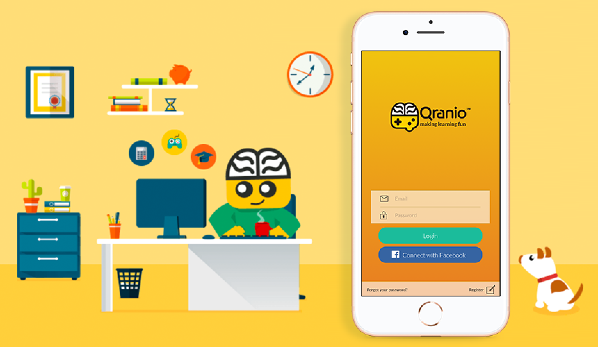
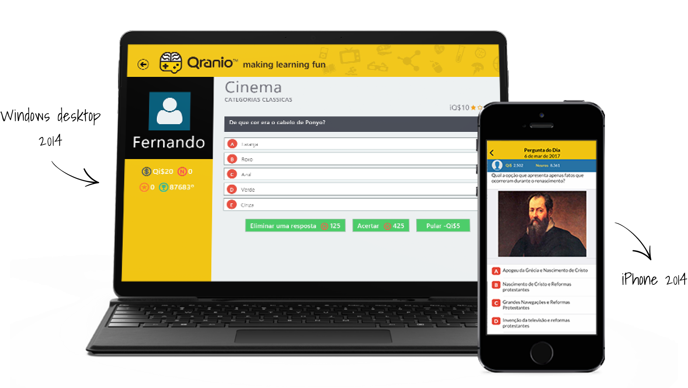
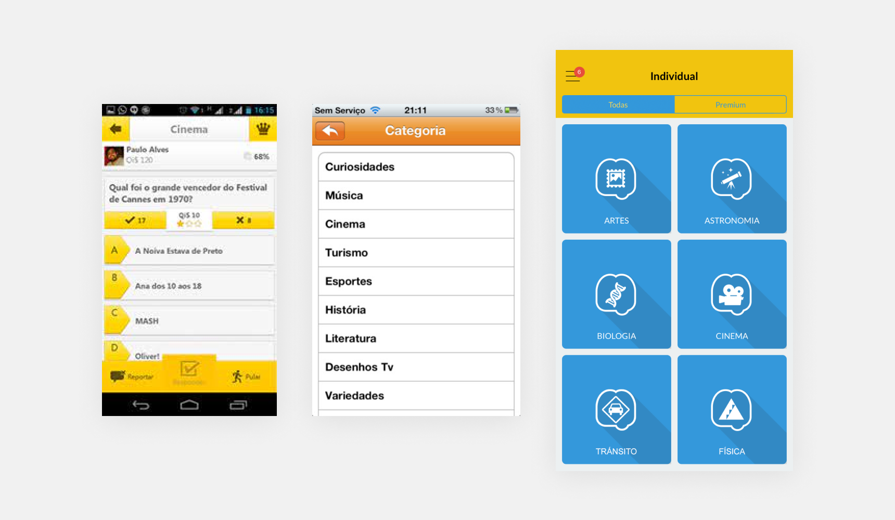

Qranio
App
Illustration
Web
2015
Qranio is an online platform with the mission to make learning fun by stimulating users to learn at any moment with total mobility through games based on qualified, educational content while earning prizes with their intelligence.


What I Did
- Art direction and design of the iOS app;
- Designed and coded the Windows app;
- Designed elements of the Android app.
For Whom
My Challenges
- Make the platform accessible on all devices.
- Increase the number of iPhone users.
- Get to know better and apply Windows design patterns.

Design System
Create a Design System that will allow the design teams to keep consistency between all platforms.